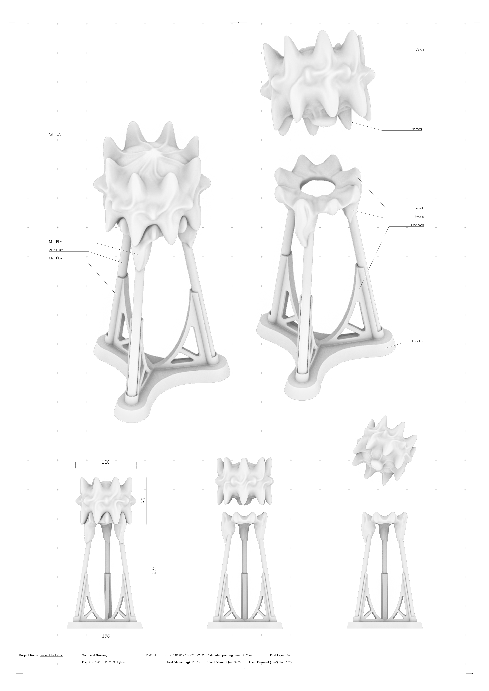
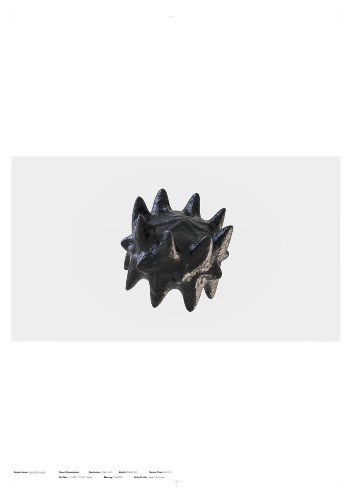
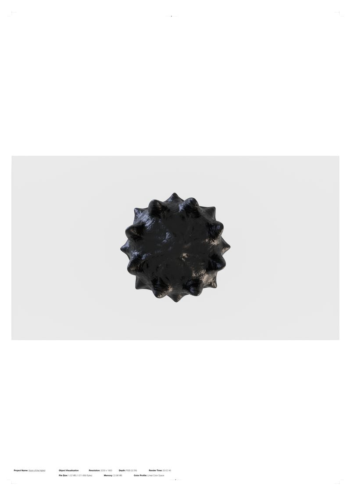
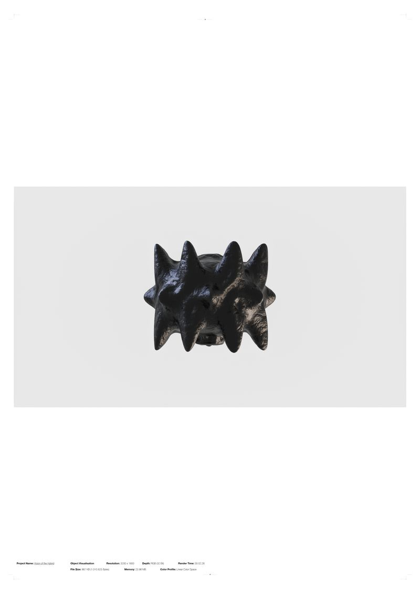

Vision of the Hybrid
Politics of Design | 2024
How can an all embracing status quo be challenged? Drawing on Rosi Braidotti's concept of relational thinking as collaborative engagement, the human condition is not a fixed category, but a contested and reversible one. Determined by structures of gender, class, and race that reproduce themselves through every technology we create. To break this cycle, it needs an impulse from that which opposes the human: the other. An Exploration.
At the center is a 3D-printed object designed to provoke rather than instruct. Through tactile exploration and a non-linear narrative co-written with artificial intelligence, the project creates a space where questions about identity and technology can emerge. Rather than offering answers, the project invites a collective reimagining of multiple futures.
The work is a personal materialized vision of the posthuman, paving the way for a collective effort toward imagining worlds. This could be a beginning.


The Vision
• The connection has changed a lot in the last few days. The vague feeling is still there, but a kind of familiarity has come into it. Now it is more comforting than frightening. Well, it was never really frightening, it was unknown and therefore suspicious. That's not what it is now. The humming has also changed! From a very deep, almost judgmental sound to a warm purr, slowly increasing in intensity as I enter the room and lift it from its stand.
• I don't know anymore. I don't know how we found it. These exact memories are so blurred. Like those childhood memories that only appear as memories because we've seen pictures of them and are now unsure if we ever consciously experienced them. Some memories of that trip three months ago are still there, but I wonder if I should even consider them real. I'm afraid to overwrite what really happened that day. Perhaps it is not important, pure existence demands some respect, known and unknown.
• Mostly cloudy actually. I think that's normal for this time of year. Still, I am a little disappointed. The device I am building is not really my best work. I wanted to give it my best in terms of precision and function. I visited it many times and first tried to put the structure next to it in the warm light. I thought they should get used to each other. After a day, it overgrew part of the frame. Now it is no longer a separate stand, but a part of it, a part of the way it interacts with its surroundings, a part of its logic, you might say. Now I am starting to think there is something beyond precision, beyond function.
• It is surprisingly difficult for me to think about what it really is, despite my profession and the resources available here. I have tried to compare it, both positively and negatively. Although i am not sure if this is even useful. One of my guests once described it as a kind of phasma, a ghost, and I understand the connotation: the untouchable, the nomad, a wandering stranger who passes by our oasis, piquing our curiosity and telling us the myths he has collected along the way. My guest's curiosity was also aroused when they saw the object. They were very curious and very touchy. It was a bit embarrassing, I didn't want the object to think I was like that; curious and touchy like a little child. It didn't respond to the touch, as if the overwhelming reaction of my guest had filled the communication capacity of the room to the limit. There was no room left for what was supposed to be communicated. I'm sure it wasn't happy that night and i felt like i had let it down at its moment of greatest vulnerability in front of unknown entities.
• I really want to experience it all, all these loose ends whose promising conclusion gives me a hysteria I have never known before. It is as if the place we all dream of is not a real dimensional place but a vision of the hybrid in between. Between cultural and societal promises that only serve a power that keeps the structure in place, but change is inevitable.
• I am unharmed but my body is shivering. Its not the temperature, the air is warm and cosy without being sticky and thick. The light in the room is extremely soothing and when it hits the object small interplays of light and shadow crawl across its appearance. Through the valleys of its surface, so soft i forget what its real qualities are. I wake up and look at it. standing there in the warm morning sun. Embracing the reality around itself. A notion of vain appears and dissolves instantly as its greets me with a quiet hum. My interaction with it is never the same. I am always surprised at how much i don't know about it - or what it does.


• Another visitor once suggested that the object might be a way of interacting with another something, like a controller. They are very intellectual and i admire their opinions on all sorts of subjects. But this time i think they are wrong. Not about the idea itself, i am sure it is interactive, but its not a means to an end, its the purpose itself; a catalyst. Dissolving boundaries and creating a new world, with the narrative of hybridity and metamorphosis at its core.
• The rain was heavy that night, brushing against the shiny shields of the room. The shimmering glow of the surveillance scans illuminated the object. Caught in a feverish state between sleep and wakefulness, I saw a future of appreciation and affirmation of the other. My soul longed to connect with what surrounded me. To appreciate my own identity and experiences while celebrating the multiplicity of others. In this ephemeral moment, I glimpsed the vast landscapes of the in-between, an idea that traversed realms both familiar and unknown. The object became what we have long lost, a connection to our intuition. A connection to what lives within us, on us and around us. In that moment i was no longer afraid to let go.